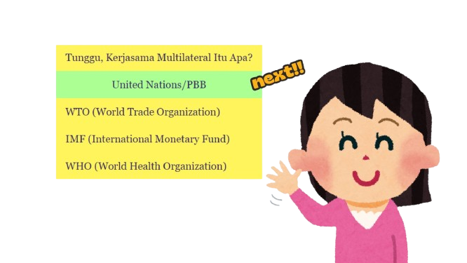
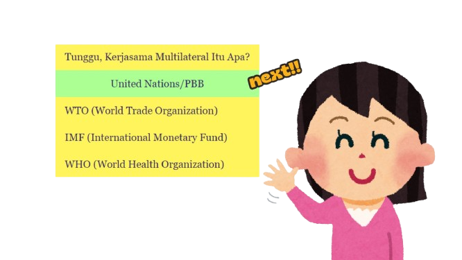

KERJASAMA MULTILATERAL: PENJELASAN
- Kerjasama multilateral adalah kerjasama yang melibatkan banyak negara dari berbagai penjuru dunia untuk mencapai tujuan bersama. Biasanya, kerjasama ini dilakukan melalui organisasi internasional yang mengatur aturan dan memfasilitasi diskusi antar negara.
- Contoh kerjasama multilateral adalah PBB (Perserikatan Bangsa-Bangsa), di mana banyak negara bekerja sama untuk menjaga perdamaian dunia, membantu negara yang sedang mengalami bencana, atau menyelesaikan masalah global seperti perubahan iklim. Contoh lainnya adalah WTO (Organisasi Perdagangan Dunia), yang membantu negara-negara dalam mengatur perdagangan agar adil dan saling menguntungkan.
- Kerjasama multilateral penting karena ada masalah yang tidak bisa diselesaikan oleh satu atau dua negara saja, seperti polusi udara, wabah penyakit, atau konflik antar negara. Dengan bekerja sama secara global, negara-negara bisa berbagi ide, sumber daya, dan tenaga untuk menciptakan dunia yang lebih baik bagi semua orang.
- Pada selanjutnya, akan dijelaskan mengenai 4 contoh kerjasama Multilateral, yaitu PBB, WTO, IMF, dan WHO.
.jpg) 
